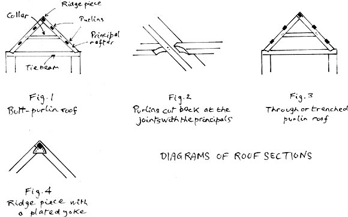
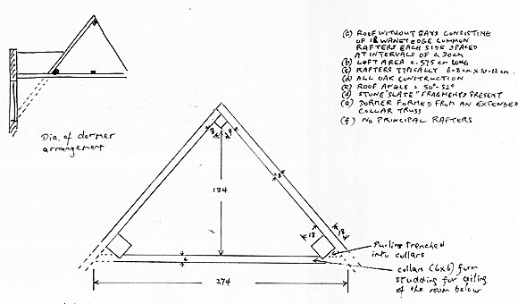
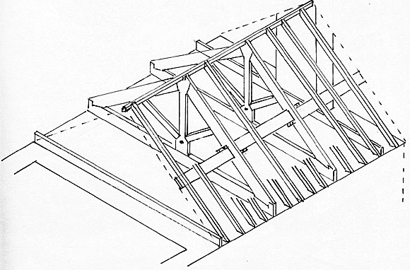
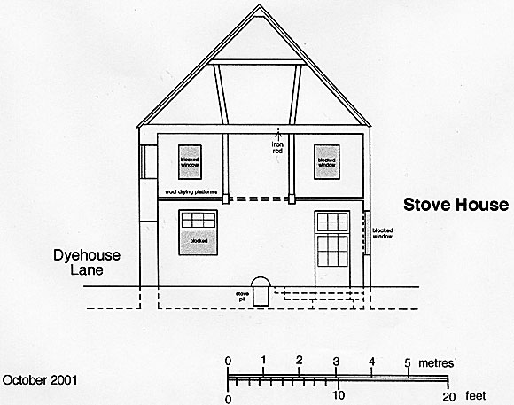

Roof Construction and Dates
Houses may be refaced or otherwise altered. If any part of the structure
is left alone and unvisited it is likely to be the roof space. The timbers
of the roof may frequently be the best guides to date a building, even
though corroborative evidence is still sought. In the main, Batheaston
roofs date only from the early 17th Century.
The normal Batheaston roof is of the butt-purlin type (12.1), that is, rafters supported by purlins, which, in turn, are supported by a truss consisting of heavier principal rafters into which the purlins are jointed, a tie beam and a collar. In early 18th Century roofs the purlins may be cut back at the juncture with the principals (12.2). Joints are normally oak pegged to hold them together but increasingly iron-nailed during the 18th Century with iron bolts used by the end of the century.
A roof is of the through-purlin type when the purlins are carried on the back of the principals or trenched into them so that the principals do not act as common rafters to support the roof covering (12.3). The through-purlin roof is possibly an older technique than the butt-purlin roof and has been found in Batheaston but in Linda Hall’s north Avon and south Glos. Survey (1983, p.37) the majority of roofs were of the butt-purlin type by the 17th Century, which accords with the Batheaston survey.

12. diagrammatic examples of Batheaston roofs
Some roofs lack the tie beam and consist only of common rafters. In Batheaston this type of roof is associated with the extended-collar roof in late 17th Century gabled houses. The early 17th Century fashionable gabled houses suffered the inconvenience of the truss coming down into the attic and sometimes obscuring the dormer window. This has been observed in two of the surveyed houses. A solution to the problem, favoured in the Cotswolds, was to get rid of the principals and extend the collars into the dormer; the collars in their turn being supported by heavy section purlins. This device, illustrated in (13) from a late 17th Century Batheaston house, cleared the attic room of superfluous roof timbers.

13. Survey sketch of an extended collar roof of a late 17th Century house
in Batheaston
Click Image for High Resolution Version
Ridge pieces set diagonally, are the norm in Batheaston
from the early 17th Century as, apparently, and not surprisingly, they
are in west Wilts but not in east Wilts where there are different building
traditions (Slocombe, 1988, p. 67). In the late 17th Century the tendency
was to reinforce the ridges with plated yokes (12.4), a practice which
continued through the 18th Century.
There is dating evidence for the use of king post roofs and tusk tenons,
from about 1765 (14). Although known for centuries earlier the king post
roof is normally regarded as a 19th Century constructional feature in
domestic and agricultural structures. The queen post roof (15) has only
been encountered, not unexpectedly, in commercial structures - a
late 18th Century barn and a mid 17th Century stove or wool drying house.

14. King post and tusk tenon roof structure from a late 18th Century Batheaston house

15. Section of a Batheaston mid 17th Century industrial building showing its raking Queen Post roof (courtesy Mike Chapman)
The quality of the timber used in roof structures in Batheaston is variable, ranging from large section sawn pieces of about 30cm for truss construction to waney or unfinished pieces, frequently with the bark still adhering, and of slight scantling for common rafters. This may reflect the shortage of quality timber by the early 17th Century - or may be the builders’ economic common sense. Similarly, many examples of re-used timber have been identified.
Carpenters’ marks are also of frequent occurrence in constructions up to the end of the 18th Century, being in the form of Roman numerals incised into principals and purlins, indicating prefabrication of roof timbers on the ground and then assembled on site.